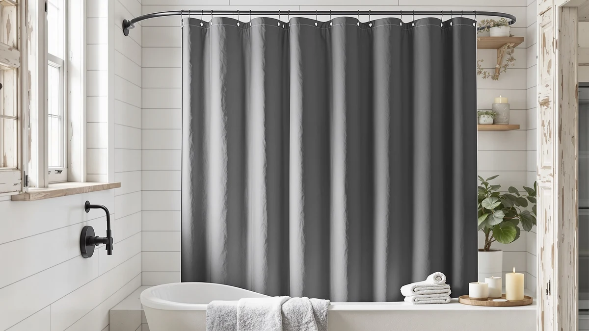

The Best Magnetic Shower Curtain Liners (2026)
Prices and picks verified as of September 2026. Independent, reader-supported reviews.


Quick Answer
The BTTN Long Linen Textured Waterproof is the best magnetic-style shower curtain liner for most bathrooms. At $23.98, it pairs a linen-textured face with a water-resistant PEVA backing in the standard 72 by 84 inch size, so you skip buying a separate liner. If you want a longer drop, a ruffled farmhouse look, or a hookless design instead, the six alternatives below cover those cases.
Our pick: BTTN Long Linen Textured Waterproof — $23.98 Check Price on Amazon
Bottom line: our top pick is the BTTN Long Linen Textured Waterproof Shower Curtain Set at $23.98. The best budget option is the MIULEE 72 x 84 Extra Long Linen Shower Curtain Cream Beige 12 at $23.95.
Things to Know Before You Buy
- None of these curtains use a literal sewn-in magnet. Every pick in this guide to the best magnetic shower curtain liners relies on a water-resistant polyester and PEVA build instead, the same approach most single-panel curtains marketed this way actually use. See our magnetic vs weighted comparison if you want a curtain built around an actual magnetic hem.
- Every pick doubles as its own liner. The PEVA backing on each panel is water-resistant on its own, so you do not need a separate fabric liner underneath.
- Width is fixed at 72 inches across this lineup. Drop length varies: three picks use the standard 84 inch drop and two use a 71 by 74 inch stall size, while two run a longer 96 inch drop for tall showers, so measure your rod before ordering.
- Price runs from $23.95 to $35.99. That is a tighter spread than most shower curtain categories, and every listing here lands closer to $30 than to the under-$10 liners in our clear liner guide.
- Design ranges from minimalist linen texture to ruffled farmhouse and waffle weave. If you want a specific look, check our farmhouse and boho curtain guides for more picks in those styles.
We compared the best magnetic shower curtain liners and the single-panel curtains sold as an alternative to them, evaluating seven current Amazon listings on price, material, and stated size to see which ones actually stay close to the tub instead of drifting into the spray. None of the picks below use a literal sewn-in magnet. Each instead pairs a linen-textured, ruffled, or waffle-weave polyester face with a water-resistant PEVA backing, so the same panel that decorates your bathroom also keeps water off the floor without a separate liner underneath.
Price across this lineup runs from $23.95 to $35.99, a tighter range than most shower curtain categories. Every listing specifies a 72 inch width. Three use the standard 84 inch drop, two run a longer 96 inch drop built for tall showers or clawfoot tubs, and two use a 71 by 74 inch footprint sized for stall showers instead of tubs. We pulled every price, material, and dimension from the current Amazon listing rather than the product title, since titles often round dimensions or drop the fabric blend entirely.
The BTTN Long Linen Textured Waterproof is the best magnetic-style shower curtain liner for most bathrooms. At $23.98, it undercuts five of the six other picks while matching the standard 72 by 84 inch size that fits most tubs, and its linen-textured face gives you a fabric look with the waterproof backing already built in. If you want a nearly identical option, an extra-long drop, a ruffled farmhouse print, or a hookless hang, the six alternatives below cover those cases.
Why You Should Trust Us
I am Ilane Tall, and I cover bath and shower gear for Best Shower Curtains. For this guide to the best magnetic shower curtain liners, I focused on the details that decide whether a single-panel curtain can replace a separate liner: stated material, panel size, current price, and how the listing itself describes the water-resistant backing.
We do not own or install every product we cover, and we do not run a physical testing lab. Instead we research each listing closely, cross-check the stated material and size against the manufacturer's own description, and compare pricing across the full lineup rather than judging any single curtain in isolation. Every price, material, and dimension in this guide comes from the current Amazon listing.
How We Picked
We started with a wide list of single-panel shower curtains marketed as magnetic or weighted alternatives to a separate liner, then narrowed the field to listings with a stated polyester and PEVA blend, a clearly listed size, and a price under forty dollars. We cut any listing that did not specify its water-resistant backing, since a curtain that cannot double as its own liner does not fit what most shoppers searching for the best magnetic shower curtain liners are actually looking for.
We also made sure the final lineup covered more than one style, since buyers researching this category are choosing a look as much as a function. That is why this guide includes a minimalist linen texture, two farmhouse and ruffled designs, a hookless option, and a heavyweight waffle weave alongside the two closely priced top picks.
How We Compared
We compared each of the best magnetic shower curtain liners in this guide on the same facts: stated material, panel size, current price, and how the listing describes its hanging system, whether that is a grommet header, a rod pocket, or a hookless design. All of that comes directly from the live Amazon listing rather than promotional copy, and where a title used the word magnetic without listing an actual magnet in the description, we noted that gap rather than repeating the claim.
We also weighed price against size and design complexity, since a $35.99 ruffled farmhouse panel and a $23.95 minimalist liner are not really competing for the same buyer. The two closest picks in this guide, the BTTN Long Linen Textured Waterproof and the MIULEE 72 x 84 Extra, sit within three cents of each other, which made them the most direct head-to-head comparison in this lineup.
Our Picks

BTTN Long Linen Textured Waterproof
What we like
- Least expensive pick in this guide at $23.98
- Linen-textured face gives a fabric look without sacrificing the water-resistant PEVA backing
- Standard 72 by 84 inch size fits most tubs without alteration
Flaws but not dealbreakers
- No magnets listed in the spec sheet, despite how curtains like this are often marketed
- Only sold in the single 72 by 84 inch size, so tall showers need the extra-long BTTN pick instead
| Material | Polyester / PEVA |
| Size | 72"W x 84"L (Pack of 1) |
The BTTN Long Linen Textured Waterproof is the best magnetic shower curtain liner for most bathrooms because it combines the lowest price in this guide with a linen-textured face that looks like fabric instead of plastic sheeting. Like every pick here, it skips a literal magnetic hem in favor of a water-resistant polyester and PEVA build, which means the panel keeps water off your floor on its own.
At $23.98, it undercuts every other pick except the MIULEE runner-up by three cents, and its standard 72 by 84 inch size fits most tubs without alteration. The listing does not mention a weighted or magnetic hem, so if the panel drifts inward in a strong shower stream, a suction-cup weight or a set from our magnetic shower curtain hooks guide can help hold it flat.

MIULEE 72 x 84 Extra
What we like
- Cheapest pick in this guide by three cents, at $23.95
- Same standard 72 by 84 inch size as our top pick
- Polyester and PEVA build matches the water-resistant backing used across this lineup
Flaws but not dealbreakers
- Priced so close to the BTTN top pick that the choice between them comes down to texture, not value
- Listing does not specify a magnetic or weighted hem
| Material | Polyester / PEVA |
| Size | 72"W x 84"L (Pack of 1) |
The MIULEE 72 x 84 Extra is the runner-up in this guide because it prices within three cents of our top pick while matching its standard 72 by 84 inch size. Both use the same polyester and PEVA construction, so the practical difference between them comes down to fabric texture and print rather than price or size.
At $23.95, it is the single cheapest pick in this entire guide, though the margin over the BTTN top pick is small enough that most buyers should choose based on which design fits their bathroom rather than the few cents of savings. If the BTTN linen texture is out of stock or not to your taste, this is the direct substitute.

BTTN Extra Long Linen Textured
What we like
- 96 inch drop, the longest in this guide, for tall showers or clawfoot tubs
- Same linen-textured, waterproof polyester and PEVA build as the top pick
- Sold under the same BTTN listing family as our top pick, so the fabric feel should match if you are buying for two bathrooms
Flaws but not dealbreakers
- Costs $7.01 more than the standard-length BTTN pick for the extra 12 inches of drop
- Overkill for a standard 84 inch shower, where the extra panel would pool on the floor
| Material | Polyester / PEVA |
| Size | 72"W x 96"L (Pack of 1) |
The BTTN Extra Long Linen Textured is the same linen-textured, waterproof build as our top pick, just stretched to a 96 inch drop instead of the standard 84. That extra length matters if you have a taller-than-average shower surround or a clawfoot tub where the rod sits higher off the floor.
At $30.99, it costs $7.01 more than the standard BTTN pick, a premium worth paying only if you actually need the extra 12 inches. Hang it on a shower with a standard 84 inch drop and the panel will pool on the floor, so measure your rod height before ordering. For more options built to the same length, see our extra-long liner guide.

BTTN 72x84 Long Boho Farmhouse
What we like
- Boho farmhouse print gives a decorative look the plain linen-textured picks above do not offer
- Standard 72 by 84 inch size matches the most common tub setup
- Same water-resistant polyester and PEVA backing as the rest of this lineup
Flaws but not dealbreakers
- Highest price in this guide at $35.99, a $12.01 premium over our top pick
- Printed farmhouse pattern is a matter of taste and will not suit a minimalist bathroom
| Material | Polyester / PEVA |
| Size | 72"W x 84"L (Pack of 1) |
The BTTN 72x84 Long Boho Farmhouse trades the plain linen texture of our top two picks for a printed boho farmhouse design, and it is the option in this guide built specifically for a decorative, cottage-style bathroom rather than a neutral one. It is the most expensive pick here at $35.99, so we recommend it on style rather than value.
That $35.99 price is $12.01 more than our top pick for the same standard 72 by 84 inch size and the same water-resistant polyester and PEVA backing, so the extra cost buys the printed pattern rather than any functional upgrade. If a decorative farmhouse look matters more to you than saving money, it earns its place here. If it does not, the BTTN linen-textured top pick covers the same size for less. Our farmhouse shower curtain guide has more picks in this style.

XOGUIBO Farmhouse Shower Curtain Ruffle
What we like
- Ruffled tier design stands out from the flat-panel picks elsewhere in this guide
- Priced under $30, in the lower half of this lineup
- Standard 72 by 84 inch size fits most tubs
Flaws but not dealbreakers
- Ruffled tiers add more seams than a flat panel, which can trap water if not shaken out after each shower
- Farmhouse ruffle style will not suit a modern or minimalist bathroom
| Material | Polyester / PEVA |
| Size | 72"W x 84"L |
The XOGUIBO Farmhouse Shower Curtain Ruffle is the pick in this guide built around texture rather than a flat printed pattern. Its tiered ruffle design gives a cottage-style bathroom a layered look that none of the flat-panel picks above offer, while keeping the same water-resistant polyester and PEVA build.
At $28.99, it sits in the lower half of this lineup, cheaper than both the extra-long BTTN pick and the boho farmhouse print, though still $5.01 more than our top pick. The ruffled seams mean more fabric folds than a flat panel, so shake it out after each shower to keep water from sitting in the tiers. If the ruffled look is not for you but you still want a farmhouse print, the BTTN Long Boho Farmhouse pick above is the flatter alternative.

Conbo Mio No Hook Shower
What we like
- Hookless design removes the need for a separate set of curtain rings
- 71 by 74 inch size is built for stall showers rather than a full tub
- Same water-resistant polyester and PEVA backing as the rest of this lineup
Flaws but not dealbreakers
- $32.99 price is the second highest in this guide
- 71 by 74 inch size will not fit a standard 72 inch tub setup that needs the extra width
| Material | Polyester / PEVA |
| Size | 71"W x 74"L (Pack of 1) |
The Conbo Mio No Hook Shower is the one pick in this guide that changes how the curtain hangs rather than just its print or texture. Its hookless design attaches directly to the rod, so you skip buying a separate set of curtain rings and never deal with a rusted hook again.
At $32.99, it costs more than every pick except the boho farmhouse print, and its 71 by 74 inch size is sized for a stall shower rather than a standard tub, so measure before ordering if your setup is wider. For more hookless options built the same way, our hookless shower curtain guide covers the category in depth.

256GSM Heavyweight Ringless Waffle Shower
What we like
- 256GSM waffle-weave fabric is heavier than the standard weight used across most of this lineup
- Ringless rod-pocket design, like the Conbo Mio pick, skips separate curtain rings
- Priced under $30, in the lower half of this guide
Flaws but not dealbreakers
- 71 by 74 inch size is built for a stall shower, not a standard 72 inch tub
- Waffle-weave texture is a specific look that will not match every bathroom style
| Material | Polyester / PEVA |
| Size | 71"W x 74"L (Pack of 1) |
The 256GSM Heavyweight Ringless Waffle Shower is the pick in this guide built for buyers who want a fabric that feels substantial rather than lightweight. Its 256GSM waffle-weave construction is heavier than the polyester used on the flat-panel picks above, and like the Conbo Mio pick, it uses a ringless rod pocket instead of a separate set of curtain rings.
At $29.99, it costs $6.01 more than our top pick but stays in the lower half of this lineup overall. The 71 by 74 inch size matches the Conbo Mio pick and is built for a stall shower rather than a standard tub, so confirm your rod width before ordering. If a heavier, textured fabric matters more to you than the linen look of our top picks, this is the pick to start with.
Quick Comparison
| Product | Material | Price | Rating | Best for | Get it |
|---|---|---|---|---|---|
| BTTN Long Linen Textured Waterproof | Polyester / PEVA | $23.98 | 4 | Most bathrooms wanting a linen look with waterproof backing | View on Amazon → |
| MIULEE 72 x 84 Extra | Polyester / PEVA | $23.95 | 4 | Comparing against our nearly identical top pick | View on Amazon → |
| BTTN Extra Long Linen Textured | Polyester / PEVA | $30.99 | 4 | Tall showers needing a 96 inch drop | View on Amazon → |
| BTTN 72x84 Long Boho Farmhouse | Polyester / PEVA | $35.99 | 4 | Boho farmhouse style over a plain linen look | View on Amazon → |
| XOGUIBO Farmhouse Shower Curtain Ruffle | Polyester / PEVA | $28.99 | 4 | Cottage-style bathrooms wanting ruffled tiers | View on Amazon → |
| Conbo Mio No Hook Shower | Polyester / PEVA | $32.99 | 4 | Showers that need a hookless design | View on Amazon → |
| 256GSM Heavyweight Ringless Waffle Shower | Polyester / PEVA | $29.99 | 4 | Buyers wanting a heavier waffle-weave fabric | View on Amazon → |
The Competition
We looked at more than these seven listings before narrowing the field. Several curtains marketed with the word magnetic in the title did not make the cut because their descriptions never listed an actual magnet, just the same water-resistant polyester and PEVA build used by every pick above, so including them would have added price without adding a real feature. We also passed on a handful of thin vinyl-only panels under $15 that did not specify a fabric blend at all, since a curtain that skips describing its own material is harder to compare fairly against the rest of this lineup.
For most bathrooms, the best magnetic shower curtain liners in this guide come down to the BTTN Long Linen Textured Waterproof. It costs less than every other pick except the MIULEE runner-up, fits the standard 72 by 84 inch tub setup, and pairs a fabric look with water-resistant backing so you are not buying a separate liner. If you need a longer drop, a decorative print, or a hookless hang, the other six picks above cover those cases.
Frequently Asked Questions
Do magnetic shower curtain liners actually use magnets to stay in place?
Some products marketed under that name do use a sewn-in magnetic hem, but none of the seven picks in this guide list magnets in their spec sheet. Instead they rely on a water-resistant polyester and PEVA build with a grommet or rod-pocket top, so the panel hangs close to the tub without ballooning into the spray. If you want a curtain built specifically around magnets, see our magnetic shower curtain picks and our magnetic vs weighted comparison.
What size shower curtain liner do I need for my tub or stall?
Every pick in this guide uses a 72 inch width. Three use the standard 84 inch drop that fits most tubs, two run a longer 96 inch drop built for tall showers or clawfoot tubs, and two use a 71 by 74 inch footprint sized for stall showers rather than tubs. Measure your rod height before ordering, and check our extra-long liner picks if your ceiling runs higher than average.
Can I hang one of these curtains without a separate liner underneath?
Yes. Every pick here pairs a decorative polyester or linen-textured face with a water-resistant PEVA backing, so the same panel keeps water off your floor without a second liner behind it. That combination is what most shoppers searching for the best magnetic shower curtain liners are actually looking for: one panel that does both jobs. If you prefer separate hardware instead, our magnetic shower curtain hooks guide covers that route.